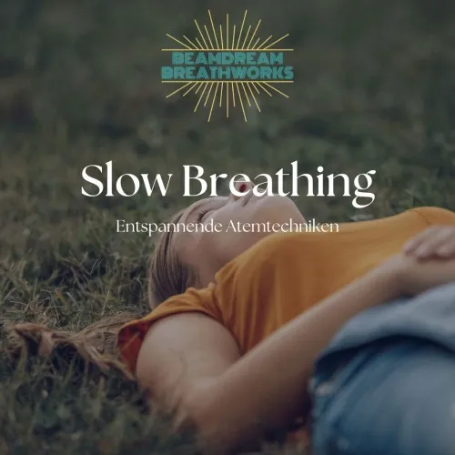
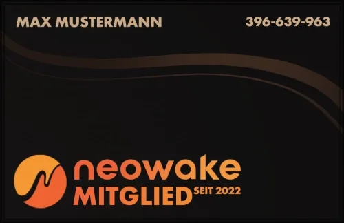
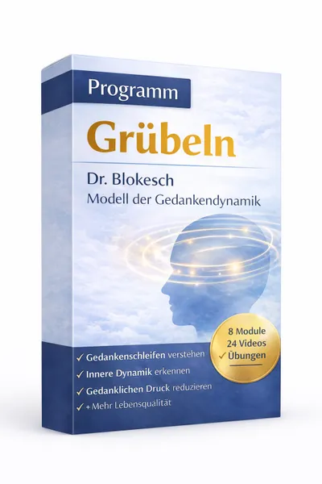
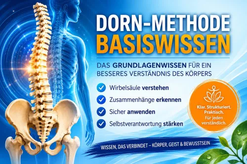

Into The Deep — Atempausen und Retention für Fortgeschrittene
Produktprofil · Marktplatz-Daten 2026-10-09 · Verkaufsseiten-Recherche 2026-10-09 · Kategorien: Personal Development
- Into The Deep — Atempausen und Retention für Fortgeschrittene ist ein/e Mitgliederbereich & Videokurs in Personal Development, vertrieben über den Digistore24-Marktplatz von Anbieter BeamdreamBreathworks, gelistet seit 2026-08-16.
- Listenpreis $141.00; Digistore24 meldet — Checkout-Konversion, — Stornierungsquote und 10 % Affiliate-Provision.
- Verdienst pro Verkauf (Affiliate): $14.11 (Anbieter-seitige Statistik, keine Prognose).
Interesse an Into The Deep — Atempausen und Retention für Fortgeschrittene? Aktueller Preis, Boni und Garantiebedingungen finden Sie auf der offiziellen Seite des Anbieters:
Offizielle Verkaufsseite ansehen
Affiliate-Link (Werbung) — wir verdienen ggf. eine Provision, ohne Mehrkosten für Sie.

Marktplatz-Daten
| Produkttyp | Mitgliederbereich & Videokurs |
|---|---|
| Preis | $141.00 (Single payment, Installment) |
| Affiliate-Provision | 10 % |
| Garantie/Rückgabe | Laut Verkaufsseite des Anbieters — vor dem Kauf auf der offiziellen Seite prüfen |
| Anbieter | BeamdreamBreathworks (gelistet seit 2026-08-16) |
| Marktplatz-Statistiken* | Checkout-Konversion — · Stornoquote — · Verdienst/Verkauf $14.11 |
* Anbieter-seitige Statistiken von Digistore24; sie hängen von der Traffic-Qualität ab und sind keine Prognose.
Marktplatz-Beschreibung des Anbieters
Der Aufbaukurs für alle, die über Entspannung hinausgehen wollen: bewusste Atempausen sicher lernen und anwenden. Über 4 Stunden Videomaterial in drei Teilen: Grundlagen und Orientierung – was CO², Sauerstoff und Nervensystem dabei wirklich tun PSYCHEDELIC BREATH® – geführte 55-Minuten-Session Vision Breathing – geführte 45-Minuten-Session Für wen: Menschen mit Breathwork-Vorerfahrung, idealerweis…
Von der Verkaufsseite des Anbieters
Seitentitel: Breathwork mit Atempausen lernen | Into The Deep Kurs
Meta-Beschreibung: Lerne Breath Retentions sicher anzuwenden und erlebe zwei Breathwork-Techniken: Psychedelic Breath® und Vision Breathing. Der nächste Schritt nach Begin to Breathe.
Hauptüberschrift
Dein Anfängerkurs für Breath Retentions
Abschnitts-Überschriften
- Du hast Begin to Breathe gemacht. Und etwas hat sich verändert.
- Was dich in Into the Deep erwartet.
- Nach Into the Deep weißt du, was in der Stille wartet.
- Du weißt
- Du kannst
- Was Teilnehmerinnen nach einer Vision Breathing & PSYCHEDELIC BREATH® Session sagen.
- Into The Deep ist für dich - wenn...
- Ich bin Corrina
- und ich begleite dich sicher in die Tiefe.
- Dein nächster Schritt. Tiefer.
Einstiegstext
Vielleicht hat sich dein Nervensystem zum ersten Mal wirklich beruhigt. Vielleicht hast du nach einer Session gespürt, wie Gedanken leiser werden, wie du klarer wirst, wie du dich anders fühlst - leichter, freier, präsenter.
Und dann kam diese Frage: Was passiert eigentlich in den Momenten, wo der Atem einfach aufhört?
Breathretention - das bewusste Halten des Atems - ist eine der ältesten und wirkungsvollsten Techniken der Atemarbeit.
Die Tummo-Meditation arbeitet damit. Freitaucher nutzen sie. Und moderne Neurowissenschaft beginnt gerade zu verstehen, was in diesen Momenten im Gehirn und Nervensystem passiert.
Recherche-Methode: rohes HTML · 1857 Wörter · Qualität: rich · recherchiert am 2026-10-09. Vollständige Recherche-Datei (MD) ↗
Wie Produkte dieser Art geliefert werden
Allgemeiner Hinweis zu diesem Produkttyp (keine anbieterspezifische Anleitung): Videokurse laufen über einen Mitgliederbereich: nach dem Checkout erhalten Sie Zugangsdaten per E-Mail und können die Lektionen in Ihrem eigenen Tempo streamen. Für die genaue Anwendung von Into The Deep — Atempausen und Retention für Fortgeschrittene sind die offizielle Verkaufsseite und die enthaltenen Materialien maßgeblich.
Gut zu wissen
- Keine Garantie-Formulierung in unserer Recherche gefunden — bestätigen Sie das Rückgabefenster auf der offiziellen Seite, bevor Sie kaufen.
Häufige Fragen zu Into The Deep — Atempausen und Retention für Fortgeschrittene
Was ist Into The Deep — Atempausen und Retention für Fortgeschrittene?
Into The Deep — Atempausen und Retention für Fortgeschrittene ist ein Angebot des Typs „Mitgliederbereich & Videokurs" im Digistore24-Marktplatz, Anbieter: BeamdreamBreathworks, gelistet seit 2026-08-16. Eingepflegt unter Personal Development. Digistore24 wickelt Checkout, Lieferung und Rückgaben ab.
Wie viel kostet Into The Deep — Atempausen und Retention für Fortgeschrittene?
Der Digistore24-Marktplatz listet es für $141.00 (single payment, installment). Preise legt der Anbieter fest und können sich ändern — die offizielle Verkaufsseite zeigt den aktuellen Preis.
Gibt es eine Geld-zurück-Garantie für Into The Deep — Atempausen und Retention für Fortgeschrittene?
Unsere Verkaufsseiten-Recherche hat keine explizite Garantie-Formulierung gefunden. Viele Digistore24-Produkte bieten 60 Tage Geld-zurück, aber das legt jeder Anbieter selbst fest — bestätigen Sie es auf der offiziellen Verkaufsseite, bevor Sie kaufen.
Ist Into The Deep — Atempausen und Retention für Fortgeschrittene seriös?
Wir bewerten keine Seriosität — wir veröffentlichen überprüfbare Zahlen: Anbieter BeamdreamBreathworks (gelistet seit 2026-08-16), Checkout-Konversion —, Stornoquote —, Affiliate-Verdienst/Verkauf $14.11 (alles Anbieter-seitige Marktplatz-Statistiken). Lesen Sie unsere Recherche-Standards und entscheiden Sie anhand der Zahlen.
Wo kann ich Into The Deep — Atempausen und Retention für Fortgeschrittene sicher kaufen?
Nur über die offizielle Verkaufsseite, die auf dieser Seite verlinkt ist (Checkout und Rückgaben laufen über Digistore24). Prüfen Sie dort Preis und Garantie vor der Bestellung. Der Link ist ein Affiliate-Link — der Kauf unterstützt diese Website ohne Mehrkosten für Sie.
Ähnliche Angebote in Persönlichkeitsentwicklung

Dauer: Laufzeit 24 Wochen / 6 Monate 1:1 Intensiv Coaching / NeuroZen® Mentoring für DEIN persönliches Ziel 22 x ZoomCalls von ca. 60-90 Minuten 1 Tag VIP-Live-

Dauer: Laufzeit 12 Wochen 1:1 Intensiv Coaching / NeuroZen® Mentoring für DEIN persönliches Ziel - 12 x ZoomCalls von ca. 60-90 Minuten - Datenaustausch via Mai

WOLKENWEICH Online-Begleitung - Dein 6-monatiger Premium Zugang - eingebettet, stabil von allen Seiten, geerdet, sicher, geborgen, ruhig Du erhältst einen Premi

MATRIXPRINZIP – High-Ticket-Produkt mit bis zu 820,56€ Provision pro Verkauf! Mindset, emotionale Intelligenz und finanzielle Intelligenz – genau die Fähigkeite
Weitere Angebote von BeamdreamBreathworks
Die meisten Trader scheitern nicht an ihrer Strategie. Sie scheitern an ihrem Zustand. FOMO. Revenge Trading. Overtrading. Panic Exit. Paralysis. Das sind keine
Die einzige Ausbildung in einer Methode, die es ausschließlich bei Beamdream Breathworks gibt: verbundener Atem kombiniert mit neurogenem Zittern. Über 4 Stunde

Die Weiterbildung für alle, die mit gestressten und überstimulierten Klient:innen arbeiten. Fokus auf Regulation statt Aktivierung. 3 Module, fast 4 Stunden Vid
Ähnliche Preislage in Persönlichkeitsentwicklung

Das lukrativste Abo-Produkt auf Digistore Verdiene passives Einkommen durch monatliche Provisionen (30%) Mit der neowake Mitgliedschaft erhalten Mitglieder Zugr

Psychologische Selbstmanagement-Kurse nach dem Blokesch-Modell von Dr. Richard Blokesch für Menschen, die wiederkehrende Denk-, Stress- und Kontrollschleifen be
Affiliate-Partnerprogramm: Onlinekurs „Bevor du JA sagst“ Provision: 50% (99,50€ pro Verkauf) Als Affiliate erhältst du 50% Provision auf jeden vermittelten Ver

Dorn-Methode Basiswissen Die Dorn-Methode gehört seit Jahrzehnten zu den bekanntesten Methoden im Bereich Wirbelsäule, Körperstatik und Selbsthilfe. Mit diesem
Ähnliche Suchanfragen
Wo Sie es sich ansehen können
Wo Sie es sich ansehen können
Aktuelle Preise, Garantie und Boni finden Sie auf der offiziellen Verkaufsseite:
Offizielle Verkaufsseite ansehen
Das ist ein Affiliate-Link (Werbung) — kaufen Sie darüber, verdienen wir ggf. eine Provision, ohne Mehrkosten für Sie.
Quellen & weiterführende Informationen
- Offizielle Verkaufsseite (aktueller Preis, Garantie, Boni): www.beamdream.com/videokurse/into-the-deep-breathretention-k (Affiliate-Link)
- Öffentliche Digistore24-Produktseite: digistore24.com/product/674159
- Vollständige Recherche-Datei (Markdown, versioniert): content/products/58399-into-the-deep-atempausen-und-retention-f-r-fortgeschrittene.md
- Marktplatz-Kategorie: Persönlichkeitsentwicklung
Wie wir Produkte wie Into The Deep — Atempausen und Retention für Fortgeschrittene bewerten
Sechs Prüfungen, ausschließlich mit offiziellen Marktplatz-Zahlen. Die vollständige Bewertungsmethode lesen · unsere Recherche-Standards & Kennzeichnung.
Fragen oder eigene Erfahrungen mit Into The Deep — Atempausen und Retention für Fortgeschrittene?
Praxis-Tests veröffentlichen wir erst, nachdem wir ein Produkt selbst gekauft haben — aber Ihre Erfahrung hilft anderen Lesern: Diskussion zu Into The Deep — Atempausen und Retention für Fortgeschrittene auf GitHub starten/verfolgen. Falsche Zahl gefunden? Korrektur melden — jede Seite zeigt ihre Datenstände, Korrekturen gelten für die ganze Website.